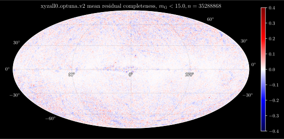
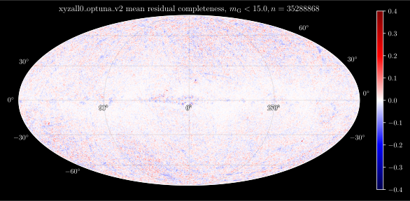

Deep Potential
Determining gravitational potential from a snapshot of stellar kinematics
IWR, Heidelberg, 27 February 2024

Taavet Kalda, Gregory M. Green, Soumavo Ghosh (MPIA)

Outline of the talk
- Motivation
- Theoretical formalism
- Application on a $N$-body simulation of a barred galaxy
- Milky Way + Gaia and next steps
Motivation
Artist's impression of the Milky Way
- Gaia + spectroscopic surveys provides us with 33 million stars with full 6D phase-space coordinates.
- What can we figure out about the overall matter distribution based on the positions of surveyed stars?
Dynamics
- We treat stars as point masses with 3-dimensional position $\vec x$ and velocity $\vec v$.
- Accelerations guided by gravity: $$ \vec a = -\vec\nabla \Phi \left( \vec{x} \right). $$
- $\vec a$ is unobservable (as of yet).
- Accelerations are $\sim 1\,\mathrm{cm/s/decade}$.
- Knowing $\Phi\left(\vec{x}\right)$ would tell us the distribution of total mass (baryonic + dark) in the Milky Way. $$ \rho_\mathrm{total} = \frac{1}{4\pi}\nabla^2 \Phi(\vec x).$$
How to find $\Phi(\vec x)$?
- In principle, any potential fits the observation.
- Need to assume something about how the system evolves.
- Stationarity: The density of stars is time-independent.
How to find $\Phi(\vec x)$?
- In principle, any potential fits the observation.
- Need to assume something about how the system evolves.
- Stationarity can be enforced in different frames.
Theoretical formalism
- We treat the stars using distribution functions.
- $f(\vec x, \vec v, t)$ - What is the probability of finding a star with position $\vec x$ and velocity $\vec v$ at time $t$?
- All-sky surveys provide us with $f(\vec x, \vec v, t=t_0)$.
- Nice because $f(\vec x, \vec v, t)$ evolves according to the Boltzmann equation: $$ \frac{\mathrm{d}f}{\mathrm{d}t} \equiv \frac{\partial f}{\partial t} + \vec v\cdot\frac{\partial f}{\partial \vec x} -\frac{\partial \Phi}{\partial \vec x}\cdot \frac{\partial f}{\partial \vec v} = 0 \, . $$
-
Stationarity: $\frac{\partial f}{\partial t} = 0$
⇒ Adjust $\Phi\left(\vec x\right)$ until $\frac{\partial f}{\partial t} \rightarrow 0$ everywhere.
Theoretical formalism
- We treat the stars using distribution functions.
- $f(\vec x, \vec v, t)$ - What is the probability of finding a star with position $\vec x$ and velocity $\vec v$ at time $t$?
- All-sky surveys provide us with $f(\vec x, \vec v, t=t_0)$.
- Nice because $f(\vec x, \vec v, t)$ evolves according to the Boltzmann equation: $$ \frac{\mathrm{d}f}{\mathrm{d}t} \equiv \frac{\partial f}{\partial t} + \vec v\cdot\frac{\partial f}{\partial \vec x} -\frac{\partial \Phi}{\partial \vec x}\cdot \frac{\partial f}{\partial \vec v} = 0 \, . $$
-
Stationarity: $\left(\frac{\partial f}{\partial t}\right)_\Omega \equiv \frac{\partial f}{\partial t} + \left(\vec\Omega\times\vec x\right)\cdot \frac{\partial f}{\partial \vec x} + \left(\vec\Omega\times\vec v\right)\times\frac{\partial f}{\partial \vec v} = 0$
⇒ Adjust $\Phi\left(\vec x\right), \Omega$ until $\left(\frac{\partial f}{\partial t}\right)_\Omega \rightarrow 0$ everywhere.
Recap: What are the assumptions?
Find $\Phi(\vec x)$, which is equivalent to knowing the total matter distribution, assuming:- Stars orbit's are guided by gravitational potential $\Phi \left( \vec{x} \right)$.
- We observe a snapshot of stars that are statistically stationary in a rotating frame.
- Matter density is non-negative everywhere: ${\nabla^2 \Phi \geq 0}$.
Theoretical formalism continued
We need to be able to calculate gradients of the distribution function:
$$ \require{color} \sum_{\mathrm{dimension}\ i} \! \left( v_i \, {\color{orange} \frac{\partial f}{\partial x_i}} -\frac{\partial \Phi}{\partial x_i} {\color{orange} \frac{\partial f}{\partial v_i}} \right) = 0 \, . $$
Our parameterization of the potential needs to be easily differentiable:
$$ \sum_{\mathrm{dimension}\ i} \! \left( v_i \, \frac{\partial f}{\partial x_i} -{\color{cyan} \frac{\partial \Phi}{\partial x_i}} \frac{\partial f}{\partial v_i} \right) = 0 \, . $$
How neural networks can help us
- Universal approximators.
- Auto-differentiability.
- Given a neural network $y_\theta(x)$ with weights $\theta$, we can analytically compute both $\frac{\partial y_\theta}{\partial \theta}$ and $\frac{\partial y_\theta}{\partial x}$.

Overview of “Deep Potential”
Fitting the distribution function

Normalizing flows
-
Can approximate probability density functions.
- Normalized: $\int f_\varphi(\vec x, \vec v) \mathrm{d}^3\vec x\mathrm{d}^3\vec v = 1$
- differentiable.
- Sampleable.
-
How they work:
Invertible transformation: $\vec{x} \leftrightarrow \vec{y}$
$p \left( \vec{x} \right)$ is simple, but $p \left( \vec{y} \right)$ is complicated.
Fitting the distribution function
$f_{\varphi}$ is a normalizing flow with a large number of fitting parameters, $\varphi$.
We train $\varphi$ to maximize the log-likelihood of the stars: $$ L_\varphi = \sum_{\mathrm{star}\ k} \ln f_{\varphi} \! \left( \vec{x}_k , \vec{v}_k \right) \, . $$
Compute gradients of the distribution function

Normalizing flows are differentiable.
Easy to implement in autodiff packages such as Tensorflow, PyTorch and JAX.
with tf.GradientTape() as g:
g.watch(eta)
f = flow(eta)
df_deta = g.gradient(f, eta)
Fitting the potential

Represent $\Phi$ as a neural network: $\Phi_{\theta} \left( \vec{x} \right)$.
⇒ Differentiable: $\frac{\partial \Phi}{\partial \vec{x}}$.
Train $\theta$, $\Omega$ to minimize non-stationarity:
$$ \require{color} \DeclareMathOperator*{\argmin}{arg\,min} \DeclareMathOperator*{\asinh}{asinh} L_\Phi = \left< {\color{lightgreen} \asinh \left| \left(\frac{\partial f_{\varphi^{\ast}}}{\partial t}\right)_\Omega \right| } + \lambda \, \asinh \left( \max \left\{ -\nabla^2 \Phi_{\theta} , \, 0 \right\} \right) \right>_{ \vec{x} , \vec{v} \, \sim \, f_{\varphi^{\ast}} } $$
Penalize negative mass densities:
$$ \require{color} \DeclareMathOperator*{\argmin}{arg\,min} \DeclareMathOperator*{\asinh}{asinh} L_\Phi = \left< \asinh \left| \left(\frac{\partial f_{\varphi^{\ast}}}{\partial t}\right)_\Omega \right| + {\color{red} \lambda \, \asinh \left( \max \left\{ -\nabla^2 \Phi_{\theta} , \, 0 \right\} \right) } \right>_{ \vec{x} , \vec{v} \, \sim \, f_{\varphi^{\ast}} } $$
Average over samples drawn from DF:
$$ \require{color} \DeclareMathOperator*{\argmin}{arg\,min} \DeclareMathOperator*{\asinh}{asinh} L_\Phi = {\color{cyan} \left< {\color{white} \asinh \left| \left(\frac{\partial f_{\varphi^{\ast}}}{\partial t}\right)_\Omega \right| + \lambda \, \asinh \left( \max \left\{ -\nabla^2 \Phi_{\theta} , \, 0 \right\} \right) } \right>_{ \vec{x} , \vec{v} \, \sim \, f_{\varphi^{\ast}} } } $$
Application:
$N$-body simulation of a barred galaxy
$N$-body simulation

-
$10^6$ stellar particles, $5\cdot 10^5$ dark matter particles.
- $m_\mathrm{stellar}=10^5M_\odot$, $m_\mathrm{dark} = 3.2\cdot 10^5M_\odot$.
-
softening length $\epsilon = 150\,\mathrm{pc}$.
- Point mass potential $\Phi(r) = -Gm/(\epsilon^2 + r^2)^{1/2}$
- Integration time $t=9\,\mathrm{Gyr}$.
- We can test how well we reproduce the rotation and matter density at various time steps!
1. Fit the distribution function


2. Fit the gravitational potential
Accelerations: $\vec{a} = -\vec\nabla \Phi$
Densities: $\rho = \nabla^2 \Phi / \left(4\pi G\right)$
Rotation speed: $\Omega= 17.5\,\mathrm{km\,s^{-1}\,kpc^{-1}}$ (truth: $20.7\,\mathrm{km\,s^{-1}\,kpc^{-1}}$)

Non-stationarities
How much non-stationarity is left over in the system?
Galaxy is more stationary in the rotating frame.
$\Omega$ inferred to ~15% accuracy.

Solar-like sub-volume
Similar to what Gaia observes.
$\Omega$ inferred to ~20% accuracy.


Radial density profile
$\rho\left(r\right)$
Subtract stars from modeled density to obtain dark-matter density.
Milky Way
Artist's impression of the Milky Way
- Gaia provides us with 33 million stars with full 6D phase-space coordinates.
- Operating between 2013 and 2025.
- Most precise three-dimensional map of the Milky Way to date.
- We can construct datasets with $\sim 1-5$ million stars.
- Extinction and crowding makes our life complicated.
- Selection function: probability of a star with given physical parameters getting detected. Also called completeness.
- We want a dataset of stars with uniform completeness.
Modeling the selection function

 

A nice way of looking at the data
1. Fitting the distribution function
2. Fitting the gravitational potential
Accelerations: $\vec{a} = -\vec\nabla \Phi$. Mean $a_x = 1.80(1)\cdot 10^{-10}\mathrm{m/s^2}$
Accelerations: $\vec{a} = -\vec\nabla \Phi$. Mean $a_y = -0.01(1)\cdot 10^{-10}\mathrm{m/s^2}$
Accelerations: $\vec{a} = -\vec\nabla \Phi$. Mean $a_z = 0.00(3)\cdot 10^{-10}\mathrm{m/s^2}$
Densities: $\rho = \nabla^2 \Phi / \left(4\pi G\right)$. Mean $\rho = 0.086\,\mathrm{M_\odot/pc^3}$
Densities: $\rho = \nabla^2 \Phi / \left(4\pi G\right)$. Mean $\rho = 0.086\,\mathrm{M_\odot/pc^3}$
Best-fit rotation speed: $\Omega= 25.7\,\mathrm{km\,s^{-1}\,kpc^{-1}}$
Movement towards galactic center: $\vec v_0 = (-14, -225, -7)\,\mathrm{km\,s^{-1}}$
What's next?
- Comparisons with literature!
- More diagnostics, e.g:
- How stationarity gets improved in the rotating frame compared to rest frame.
- How much can we extract about dark matter
-
Incorporating datasets that reach farther out (up to 2kpc)
- Main difficulty lies in training normalizing flows!